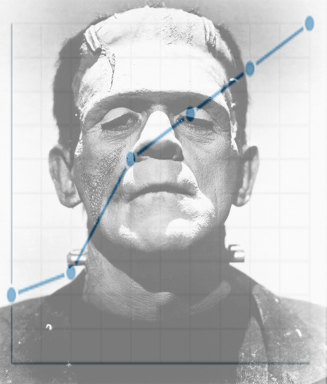

Nick Stabile - Literature and Technology Final Project

Welcome to the Frankenstein Word Graph!
To begin, please select a text file of a book containing chapters:
Enter the word(s) you'd like to graph:
Click to graph words!